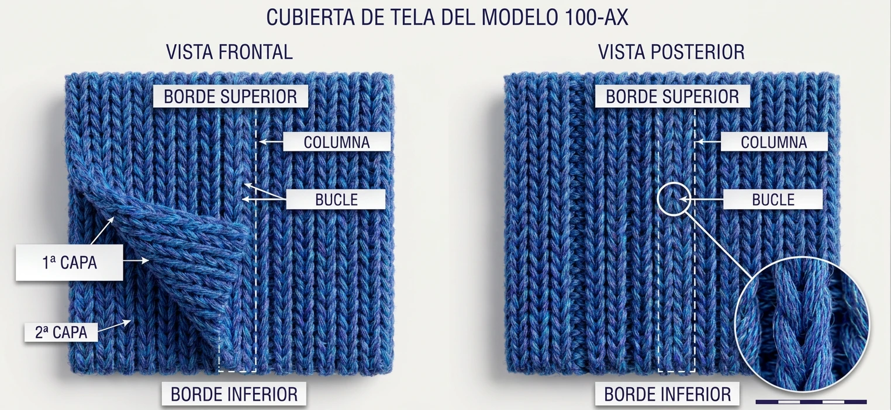
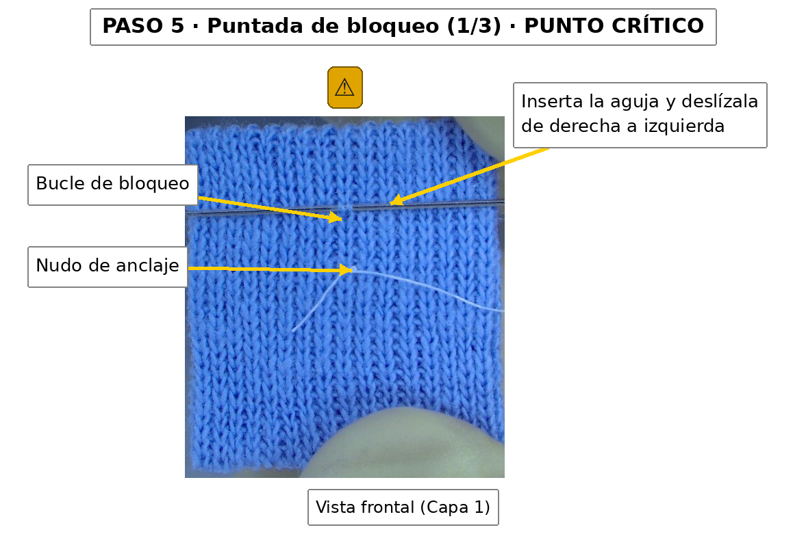
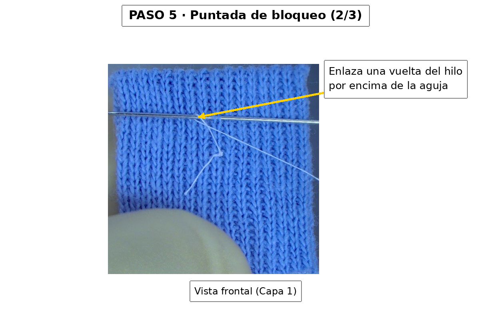
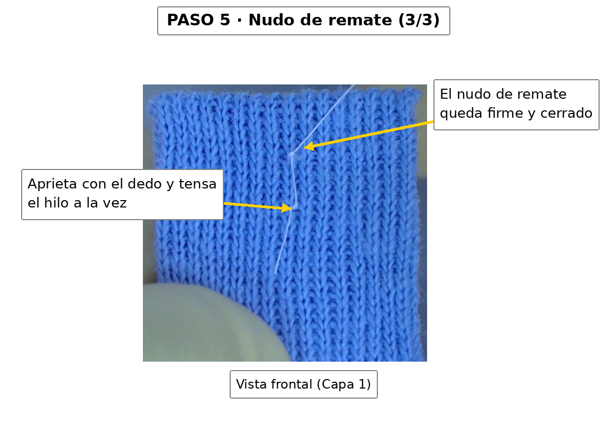

SOP-100-AX · Puntada de bloqueo en una sola capaSOP-100-AX · Single-layer locking stitch
0
Bienvenida y objetivosWelcome and objectives
Vídeo de bienvenida (avatar)Welcome video (avatar)
Vídeo de avatar pendiente de subir. Guion listo (ES/EN) en los guiones TTS.Avatar video pending upload. Script ready (ES/EN) in the TTS scripts.
ObjetivosObjectives
Objetivo principal: ejecutar correctamente el Paso 5. Para lograrlo: (1) reconocer materiales y vocabulario; (2) distinguir una capa de dos; (5) ejecutar la puntada de bloqueo en una sola capa. General: cumplir los 6 criterios del Paso 7 sin errores (100 %).Main goal: perform Step 5 correctly. To get there: (1) recognise materials and vocabulary; (2) distinguish one layer from two; (5) execute the single-layer locking stitch. General: meet the six Step-7 criteria with no errors (100%).
Material desarrollado con asistencia de IA generativa, revisado y aprobado por Ana Eslava-Graterol. Art. 50, Reglamento (UE) 2024/1689.Developed with generative-AI assistance; reviewed and approved by Ana Eslava-Graterol. Art. 50, EU AI Act.
1
Reconocer la pieza, los materiales y el vocabularioRecognise the piece, materials and vocabulary
Propósito: este procedimiento explica cómo preparar y asegurar la cubierta de tela del Modelo 100-AX de doble capa.Purpose: this procedure explains how to prepare and secure the Model 100-AX double-layer fabric cover.
Materiales: cubierta de tela del Modelo 100-AX de doble capa (capa 1 y capa 2), hilo de sutura, aguja n.º 12, tijeras, regla.Materials: Model 100-AX double-layer fabric cover (layer 1 and layer 2), suture thread, needle no. 12, scissors, ruler.
Referencia (modelo)Reference (model)

Ejercicio: coloca el término correcto (100 %)Exercise: choose the correct term (100%)
🔒 Completa este ejercicio al 100 % para avanzar.🔒 Complete this exercise at 100% to continue.
2
Una capa frente a dos (crítico)One layer vs two (critical)
La cubierta tiene dos capas: la capa 1 (donde trabajas) y la capa 2 (que no debes tocar). El Paso 5 se realiza únicamente en la capa 1. Si la aguja toca la capa 2, la pieza sale defectuosa y la línea se detiene.The cover has two layers: layer 1 (where you work) and layer 2 (do not touch). Step 5 is done only on layer 1. If the needle touches layer 2, the piece is defective and the line stops.
Vídeo 2 (Características) pendiente de subir.Video 2 (Characteristics) pending upload.
Comprobación crítica (100 %)Critical check (100%)
¿En cuántas capas trabajas en el Paso 5?In how many layers do you work in Step 5?
🔒 Supera esto al 100 % para desbloquear el Paso 5.🔒 Pass this at 100% to unlock Step 5.
3
Preparación del puestoWorkstation preparation
Pon la cubierta sobre una superficie limpia; identifica la vista frontal y los bordes superior e inferior.Place the cover on a clean surface; identify the front view and the upper/lower edges.
Orienta la pieza para ver bien columnas y bucles; revisa que no haya daños.Orient the piece to see columns and loops; check for damage.
5
Paso 5: puntada de bloqueo en una sola capa (crítico)Step 5: single-layer locking stitch (critical)
⚠ Trabaja en la capa 1, no insertes en la capa 2.⚠ Work on layer 1, do not insert into layer 2.
Ubica el nudo de anclaje y cuenta 5 bucles hacia arriba por la columna n.º 8. Ese es el bucle de la puntada de bloqueo.Find the anchor knot and count 5 loops up along column no. 8. That is the locking loop.
Inserta la aguja y deslízala de derecha a izquierda a través de la capa 1.Insert the needle and slide it right to left through layer 1.
Bordea la columna n.º 8 en la capa 1, toma el bucle de bloqueo y saca la aguja por el lado izquierdo del bucle, sin tocar la capa 2.Skirt column no. 8 on layer 1, take the locking loop and bring the needle out on the left of the loop, without touching layer 2.
Enlaza una vuelta del hilo por encima de la aguja, por el extremo izquierdo. Pasa todo el hilo por la vuelta.Wrap one turn of thread over the needle, on the left. Pass all the thread through the turn.
Aprieta con el dedo sobre la superficie mientras tensas el hilo, hasta que el nudo de remate quede firme y cerrado.Press with your finger while you pull the thread taut, until the finishing knot is firm and closed.



Simulador interactivo del Paso 5: se insertará aquí como bloque Embed (HTML).Interactive Step 5 simulator: to be embedded here (HTML).
Escenario de error (crítico)Error scenario (critical)
¿Qué haces si tocas la capa 2?What do you do if you touch layer 2?
QA
Control de calidad (job aid)Quality check (job aid)
Verde = correcto · Rojo = qué hacer si fallaGreen = correct · Red = what to do if it fails
Nudo de anclaje completo y asegurado.Anchor knot complete and secured.
Puntada de bloqueo completa y asegurada.Locking stitch complete and secured.
Recorrido del hilo uniforme a lo largo de la columna.Uniform thread path along the column.
Hilo en el punto de salida indicado en el borde superior.Thread at the exit point on the upper edge.
Sin bucles de hilo sueltos. · Sin daños en la cubierta.No loose thread loops. · No damage to the cover.
✓
CierreClosing
El dominio aquí (100 %) es la condición de entrada a la práctica supervisada en planta, no la prueba final. El formador evalúa con la lista del Paso 7 (6 criterios).Mastery here (100%) is the entry condition for supervised practice on the floor, not the final test. The trainer evaluates with the Step-7 checklist (6 criteria).
Divulgado conforme al Art. 50 del Reglamento (UE) 2024/1689 (EU AI Act).Disclosed under Art. 50 of Regulation (EU) 2024/1689 (EU AI Act).